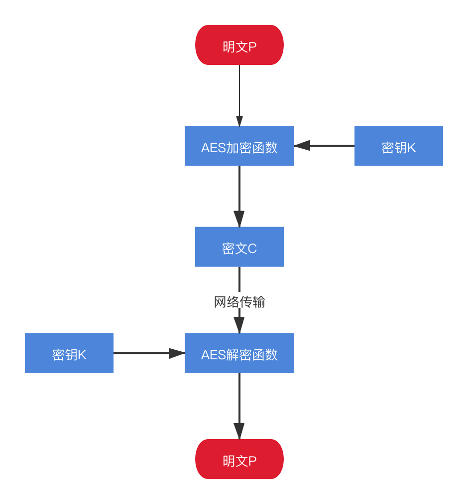
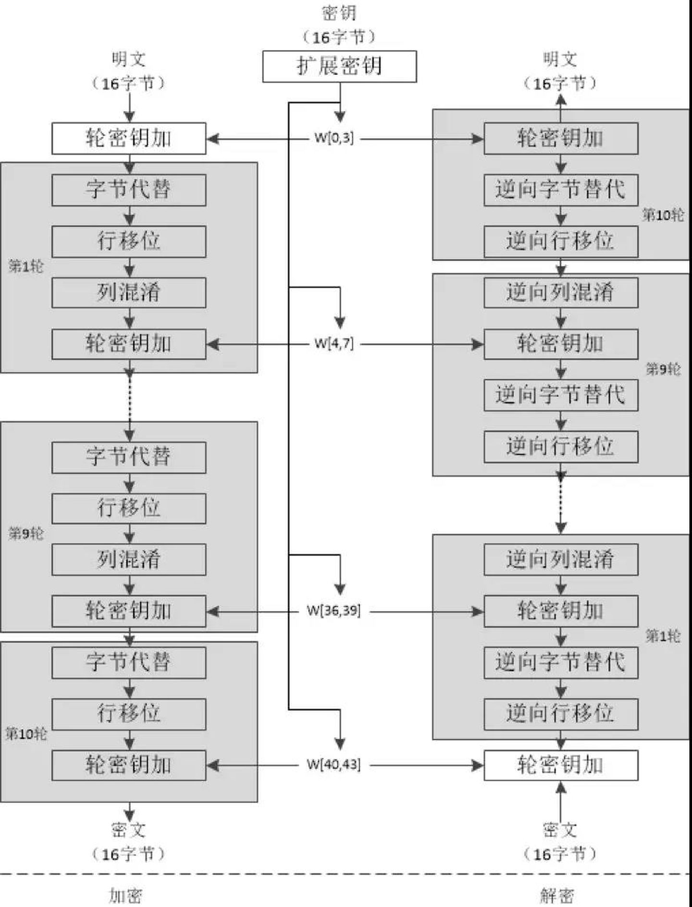

请登录
龙门飞甲
天王盖地虎
凯撒密码
abc ---右移3位--- def
def ---左移3位--- abc
密钥空间:25
仲夏夜 ---"下"移1位--- 叔秋白
简单替换
what ---替换--- ojbk
w->o
h->j
a->b
t->k
密钥空间:26！= 403291461126605635584000000
如何破解?
对称加密算法：AES
非对称加密算法：RSA
Hash 算法：MD5
AES
加解密步骤
破解(AES-128)
RSA
加解密步骤
加密过程：用原文m的e次方对n求余数，得到的值就是密文c。（mod 求余数）
c = E(m) = m^e mod n
解密过程：用密文c的d次方对n求余数，得到的值就是原文m。
m = D(c) = c^d mod n
e+n = 公钥 ≈ e
d+n = 私钥 ≈ d
我们先准备两个（很大的）质数，p q 。p * q = N p = 17 , q = 19, n = 323
我们再来生成一个l,l 为 p-1 和 q-1的最小公倍数,即144，即 16 和 18 的最小公倍数
这时候我们来生成一个E, E必须满足两个条件：介于1和l之间；并且E和l的最大公约数为1，即两个数互质。 满足E条件的数字有很多，这里我们取一个 5
最后还要生成 D , 这个数字要满足以下条件： 介于 1和l之间；E * D mod l = 1。 满足D条件的数字有很多，这里我们取一个 29， 5 * 29 mod 144 = 1
到这里为止，我们可以得到公钥 29 323 和 私钥 5 323
破解
323 = 17*19
其他:旁道攻击,量子计算
一:前端随机生成AES的密钥,从服务器获取RSA的公钥,
对AES的密钥进行非对称加密
二:把加密后的密钥在请求头中传给服务器,
用AES对灰度数据进行加密,回传服务器
三:对灰度数据进行md5校验,验证数据是否被修改
四:有无漏洞?
证书
数字签名
反爬
网络安全